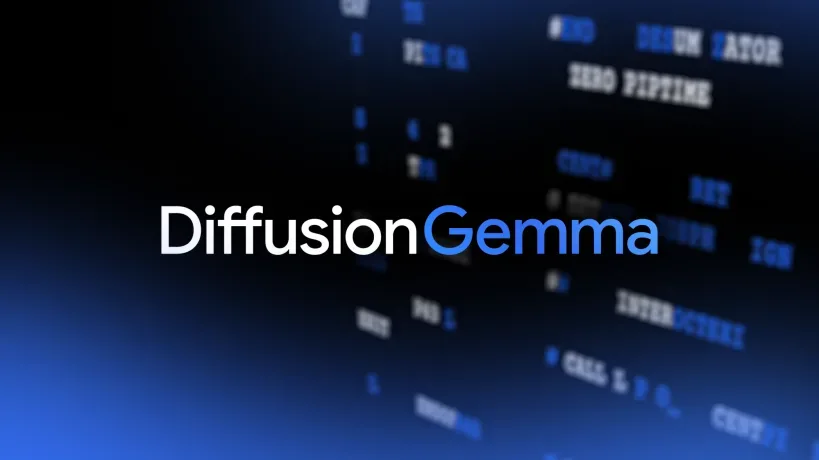
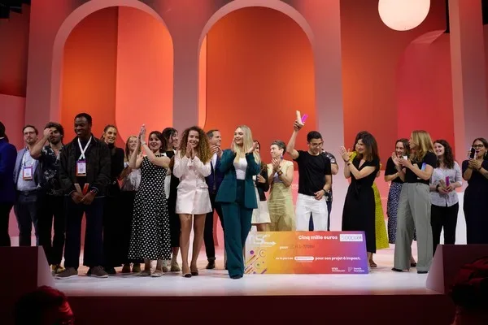
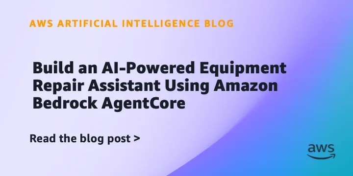
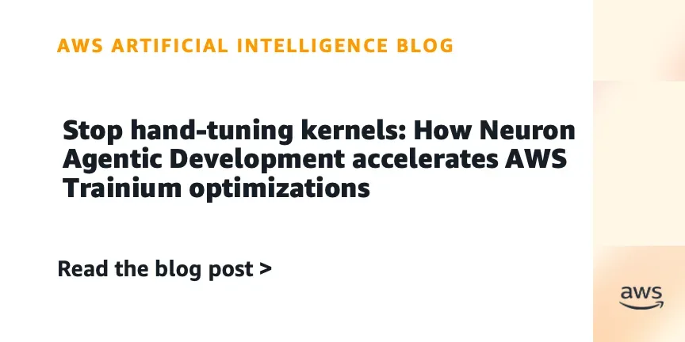
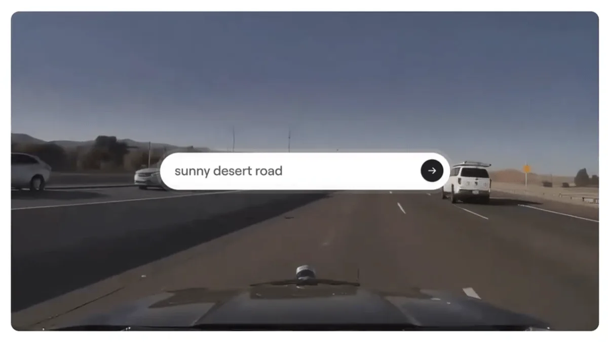
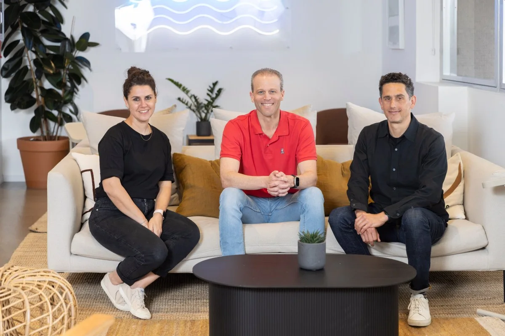
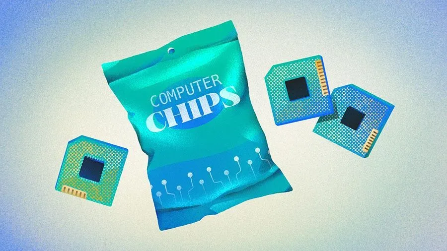
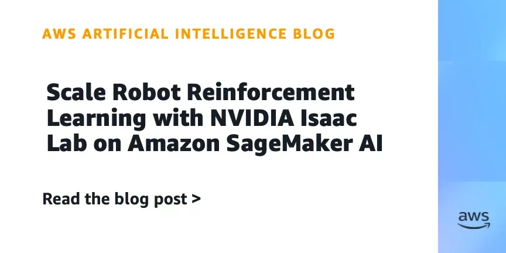
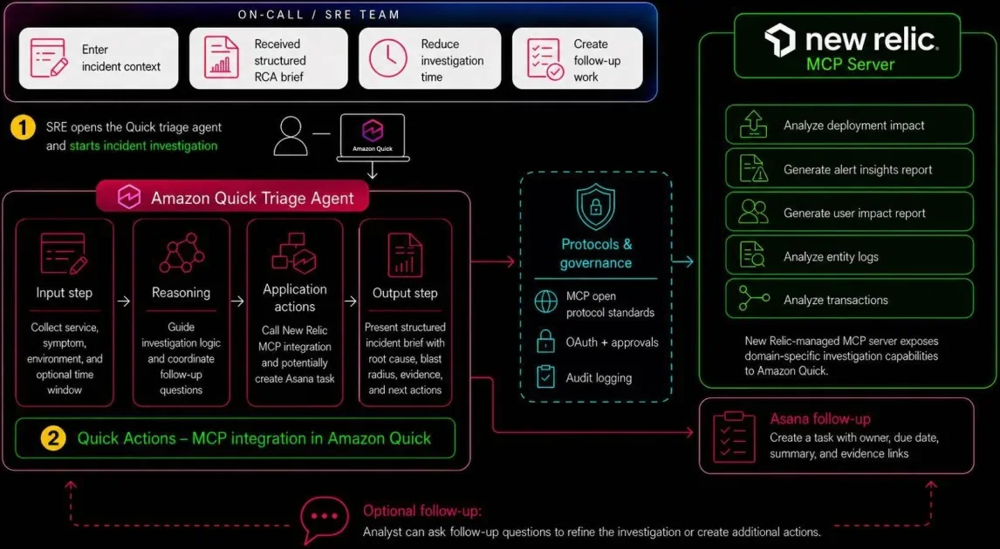

Лаборатории
OpenAI и Oracle позволят оплачивать ИИ-модели через облачные кредиты OCI
Корпоративные клиенты Oracle смогут оплачивать GPT-4o и Codex через облачные кредиты — без создания новых закупок.
OpenAI News
10 июн.Релизы, исследования, продукты, инвестиции и AI-рынок.
Архив · 741 новостных материалов · Автоматическое пополнение приостановлено
Корпоративные клиенты Oracle смогут оплачивать GPT-4o и Codex через облачные кредиты — без создания новых закупок.

Как ИИ помогает астрофизикам преодолеть ограничения суперкомпьютеров при моделировании черных дыр
Бывший инженер xAI подал иск, обвиняя компанию в игнорировании безопасности Grok и увольнении за whistleblowing.

LLM в корпоративной шине: как redb.Route 3.1.1 убирает отдельную ИИ-инфраструктуру

SEO-топ и источники нейросетей почти не пересекаются — исследователи вскрыли трафик и объяснили почему

Рабочий проект переписали с нуля — не из-за багов, а потому что команда разучилась думать самостоятельно
Amazon привлёк $17,5 млрд банковского кредита для ИИ-инфраструктуры — ещё $14 млрд через облигации.

Claude пишет 80% кода Anthropic, PyPI пропал в России, GitHub тонет в ИИ-PR — главное за неделю
![Дообучение FLUX.2 [klein] за час: LoRA на одной видеокарте с нуля до Gradio-приложения](../../assets/images/e477a47d5ab89636982fe46b.webp)
Как дообучить FLUX.2 [klein] под свой стиль за $0.50 и один час — пошаговый разбор

Как 1С научили работать с ИИ: MCP-сервер, права доступа и агент прямо в интерфейсе

3D-подруга в браузере за ноль рублей: как устроен аватар на Gemini API и Three.js

Диффузионная LLM от Google DeepMind: 1000 токенов/с на H100 и работа на потребительских GPU

Google Research научила аудиторов ловить «забытые» данные в ИИ — без доступа к весам модели

Диффузионная модель Google работает в 4 раза быстрее — но у подхода есть серьёзные ограничения

ФПИ получил права на российский тензорный чиплет: это IP-задел, а не готовый серийный ускоритель.

VivaTech 2026 и TechCrunch запускают конкурс для стартапов в сфере корпоративного ИИ.

AWS представила шаблон ИИ-помощника для ремонта техники на Bedrock AgentCore с RAG и памятью.

AWS упрощает оптимизацию ядер: ИИ-агенты для Trainium пишут, отлаживают и профилируют код без ручной настройки.

Oasis 3 от Decart генерирует дорожные миры часами, но пока теряет физику и связность сцены.

Jedify хочет стать слоем бизнес-контекста для ИИ-агентов: $24 млн и партнёрство со Snowflake.

OpenAI может взять 10 ГВт в Огайо, а Nvidia — подкрепить сделку своим балансом.

Полупроводниковые стартапы продолжают привлекать миллиарды: $10,7 млрд инвестиций в 2026 году
NVIDIA Confidential Computing защитит данные пользователей Apple при облачных вычислениях на Google Cloud.

Как AWS и NVIDIA объединили SageMaker ИИ и Isaac Lab для масштабирования RL-обучения роботов.
Федеральный судья в Миссисипи оштрафовала всех юристов в деле за использование ИИ и отменила процесс.

Amazon Quick и New Relic выпустили агента для инцидент-менеджмента с интеграцией в Asana

Apple объяснила, как её ИИ остаётся приватным, даже работая на серверах Google

Илон Маск презентовал спутник AI1: орбитальные дата-центры с чипами Nvidia и мощностью 150 кВт

«Алиса» записала PIN-код карты и выдала его по хитрому запросу — тест первых наушников «Яндекса»

Первые наушники «Яндекса» с «Алисой» — что умеет ИИ-ассистент в ухе и чего пока не может